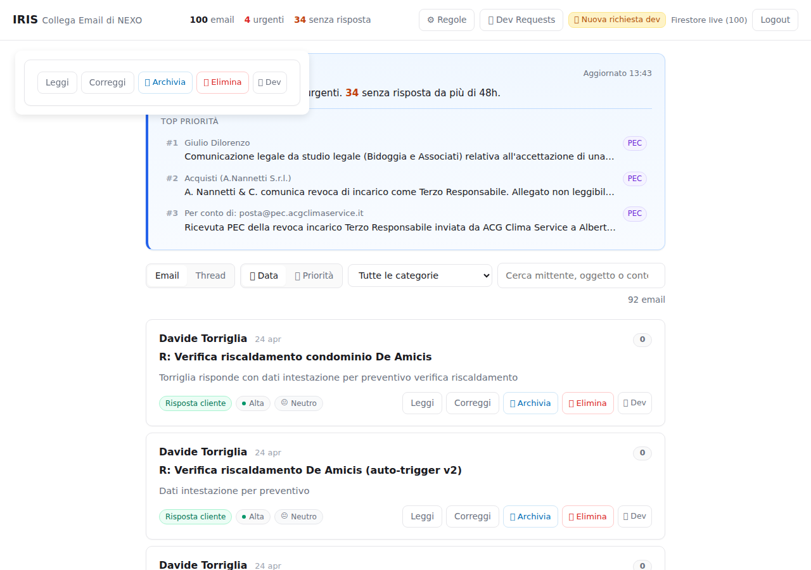

Implementati i bottoni Archivia (blu ACG) ed Elimina (rosso) in ogni card email IRIS, sia in vista singola che thread. Backend: irisArchiveEmail già esistente, irisDeleteEmail nuovo. Soft-delete: il documento Firestore non viene rimosso, viene marcato status=deleted.
| Layer | File | Modifica |
|---|---|---|
| Handler backend | handlers/iris.js | Nuovo handleIrisDeleteEmail: scrive iris_delete_queue con mode=soft; marca iris_emails.{id}.status=deleted + eliminata_il + deleteQueueId. Pattern identico ad archive. |
| Endpoint HTTP | functions/index.js | Nuovo export irisDeleteEmail (POST autenticato, verifyAcgIdToken, region europe-west1). |
| Firestore rules | firestore.rules | Aggiunta regola iris_delete_queue (read pubblica, write Admin SDK only). |
| UI card single | iris/index.html | Bottoni 📦 Archivia e 🗑️ Elimina in renderEmailCard · wire data-archive/data-delete in renderEmails. |
| UI thread | iris/index.html | Stessi due bottoni in renderThreadCard · wire con stopPropagation per non collidere col toggle thread. |
| Filtro lista | iris/index.html | applyFilters esclude status=archived e status=deleted. Loader email aggiunge campo status dal doc Firestore. |
| JS azioni inline | iris/index.html | Wrapper archiveEmail/deleteEmail + archiveEmailFromCard/deleteEmailFromCard · toast .iris-toast · animazione fade della card · confirm() obbligatorio prima dell'eliminazione. |
| JS wrapper PWA | app.js | Aggiunta IRIS_DELETE_URL + archiveEmail() e deleteEmail() riusabili dalla home/digest. |
| CSS | iris/index.html | Stile .btn-archive (blu #006eb7) e .btn-delete (rosso #dc2626), piccoli, hover dedicato. Toast IRIS con animazione. |
| Check | Esito | Dettaglio |
|---|---|---|
| CSS .btn-archive deployato | OK | regola presente in main.css IRIS |
| CSS .btn-delete deployato | OK | idem |
| HTML markup contiene btn-archive/btn-delete | OK | /iris/ rendering server |
| HTML contiene IRIS_DELETE_URL | OK | |
| Bottone Archivia colore blu ACG | OK | rgb(0, 110, 183) confermato |
| Bottone Elimina colore rosso | OK | rgb(220, 38, 38) confermato |
| Pageload zero errori console | OK | |
| Endpoint irisDeleteEmail live | OK | HTTP 401 senza ID Token (auth gate attivo) |
| Mock card render produce 5 bottoni | OK | Leggi · Correggi · 📦 Archivia · 🗑️ Elimina · 🛠️ Dev |
In una sessione browser già autenticata, le card email reali mostrano i nuovi bottoni a destra (📦 Archivia in blu, 🗑️ Elimina in rosso). I 5 bottoni sono coerenti su tutte le card.

- Auth gate attivo: irisDeleteEmail ritorna 401 senza Firebase ID Token (verificato con curl).
- Soft-delete: il doc Firestore iris_emails resta in collection con status=deleted. Nessun documento viene cancellato definitivamente.
- Coda EWS in mode=soft: il consumer Hetzner (futuro) sposterà l'email in Deleted Items di Outlook (recoverable), non hard-delete.
- Confirm() obbligatorio prima dell'eliminazione: l'utente deve esplicitamente confermare.
- Niente click reali nei test automatici: lo script test-iris-archive-delete.mjs verifica markup e CSS senza chiamare l'endpoint con email vere.
POST https://europe-west1-nexo-hub-15f2d.cloudfunctions.net/irisArchiveEmail (esistente)
POST https://europe-west1-nexo-hub-15f2d.cloudfunctions.net/irisDeleteEmail (nuovo)
Headers: Authorization: Bearer <Firebase ID Token ACG>
Body: { "emailId": "<id doc iris_emails>" }
Response (delete): { "ok": true, "queueId": "...", "emailId": "..." }
Come segnalato nell'analisi dev-analysis-KbAuca5msDQaw0rD01ic.md: il poller Hetzner (scripts/iris_hetzner_poller.py) non consuma né iris_archive_queue né iris_delete_queue. Le email vengono marcate correttamente in Firestore (la PWA le nasconde dalla lista) ma il movimento EWS in Outlook non avviene finché non si attiva il consumer. Task separato.